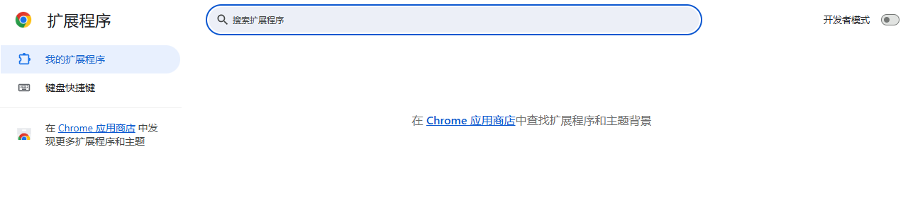
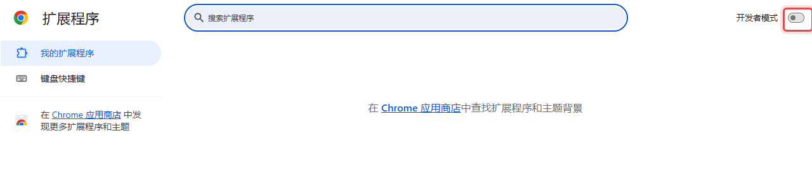
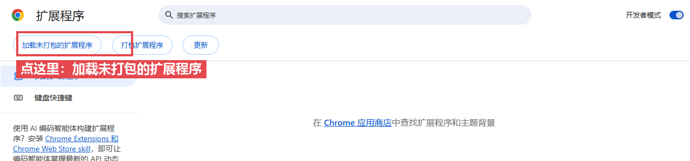
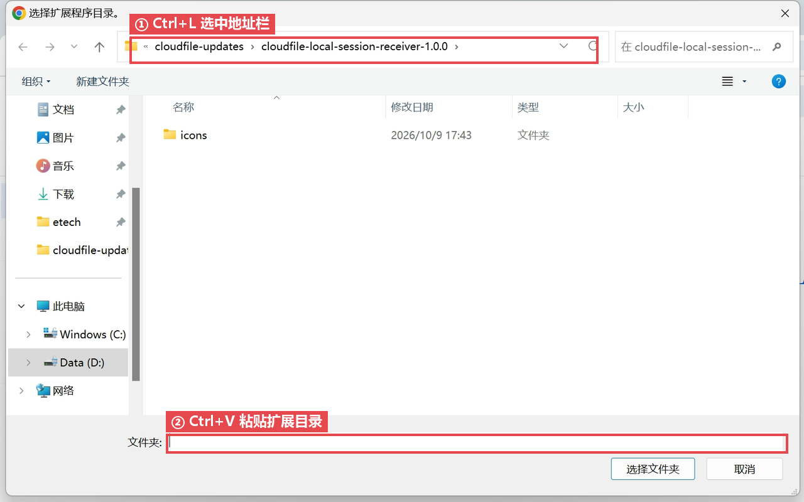
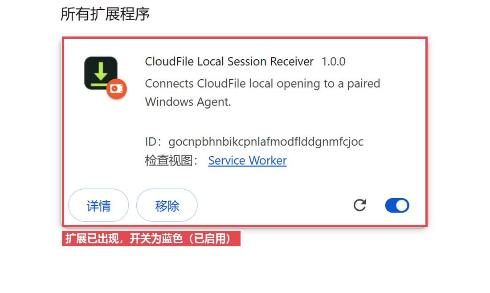

安装本地打开组件
正在检测扩展…
-
1
下载并运行安装程序
下载 install.cmd，双击运行，等它跑完。
-
2
任务中心安装引导
打开安装完成后的任务中心：点 安装引导 ⋮ →「安装或修复本机目录」→ 点击扩展目录下的地址复制
-
3
启用扩展
① 打开扩展管理页：点 Chrome 右上角的 ⋮ →「扩展程序」→「管理扩展程序」； （找不到菜单时，直接在地址栏输入
chrome://extensions回车也一样。）
右上角那个就是「开发者模式」开关，默认是关的（灰色）。 ② 打开「开发者模式」：点右上角的开关，让它变成蓝色。

打开后，左上角会多出一排按钮。 ③ 点「加载未打包的扩展程序」：左上角第一个按钮。

④ 在文件夹窗口里粘贴扩展目录：按 Ctrl+L 选中地址栏 → Ctrl+V 粘贴 → 回车 → 点「选择文件夹」。

窗口停在哪个目录都不要紧，按 Ctrl+L 再粘贴就会跳到正确位置。 本页不复制任何内容，剪贴板里始终是安装程序放好的扩展目录，第 ④ 步直接粘贴即可； 万一粘贴不出来，回到安装窗口复制那一行路径或者任务中心的安装引导页复制扩展地址。
装好后扩展 ID 应为
gocnpbhnbikcpnlafmodflddgnmfcjoc。 -
3
验证
扩展列表里出现下面这张卡片就装好了；再点浏览器工具栏上的 CloudFile 图标，显示「Agent 已就绪」即完成。

以后升级不用再跑安装：点扩展图标里的「立即升级」即可。
当前最新版本：Agent — / 扩展 —
公司策略禁止双击运行 .cmd？
打开下载目录，在文件管理器地址栏输入cmd回车，在弹出的黑窗口输入刚刚下载的 install.cmd 按回车即可。